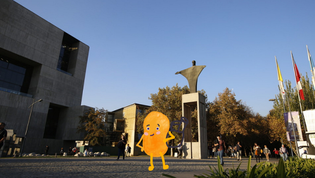
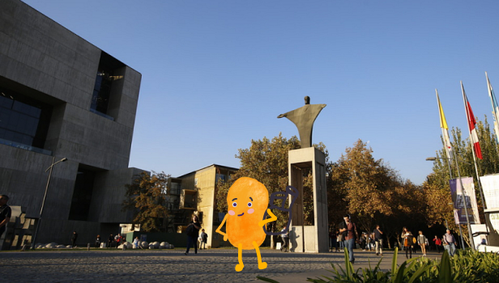

chile en palito
Este encargo en colaboración con la Subsecretaría de Turismo nos pidieron realizar proyectos basados en temas que nos dieron. Mi grupo trabajó con el tema de la comida para idear el proyecto.
Mi rol en este proyecto fue desarrollar la investigación tanto de escritorio como de campo, idear el producto y aportes en la gráfica.
El proyecto, inspirado en el funcionamiento de los aeropuertos y en todas las cosas que los viajeros deben cargar consigo, llegó "Chile en palito". Ideamos esta paleta de pastel de papa para conectar con un plato local y contundente, uniéndolo al formato to-go que poseen la mayor parte de los comestibles que se venden en el área internacional del aeropuerto. Esto lo convierte en una opción rápida y eficiente.
 
